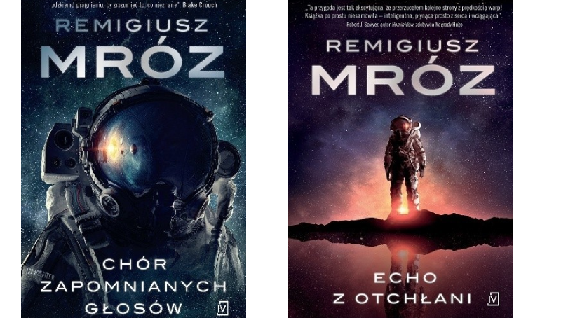

Seria Chór Zapomnianych Głosów
To jedna z zaskakujących serii Remigiusza Mroza. Różni się ona od pozostałych, akcja nie rozgrywa się w Polsce, możemy nazwać to powieścią science fiction. Opowiada historię okrętu badawczego Accipiter, który przemierza próżnię w kosmicznej podróży. Cała załoga jest pogłębiona w kriostazie (w totalnym zamrożeniu), na pokładzie jednak rozgrywa się dramat. Astrochemik Hakon przebudza się przedwcześnie i widzi jak ginie ostatni członek załogi. Akcja powieści zaskakuje jednak nawet najbardziej przeidującego czytelnika.
W TEJ SERII Zobacz inne książki!
